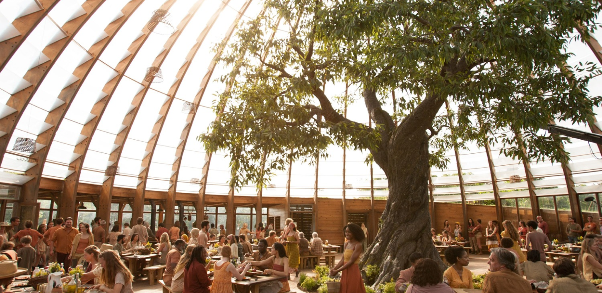
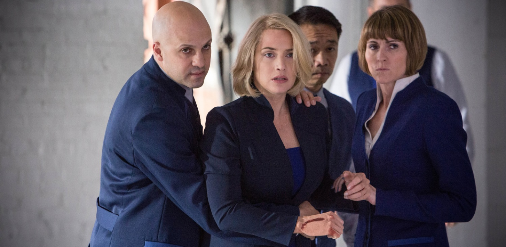

Люди Дружелюбия хотят создать абсолютно мирное общество, свободное от конфликтов и грусти, в котором не будет места войне. Они ценят дружбу и добро. Как и говорят в Искренности, члены Дружелюбия готовы лгать, чтобы сохранить мир.
Члены фракции трудятся в аграрном секторе, расположенном за городом, обеспечивая всех жителей города продовольствием. Они также работают воспитателями и младшим персоналом в больницах.
Члены Дружелюбия носят яркую, но простую одежду. Она красного и жёлтого цветов. Причём в одежде нет какой-то строгости. Друг друга члены фракции приветствуют дружескими объятиями.

ДРУЖЕЛЮБИЕ

.png)
Члены Эрудиции обладают высоким интеллектом. Они сосредоточены на науке и обучении, умеют говорить правильно и чётко, легко доказывая другим свою правоту.
Фракция поставляет городу врачей, учителей, преподавателей. Также члены Эрудиции ведут учёт людей в других фракциях и совершенствуют различные технологии, которые нужны для жизни города.
В одежде членов Эрудиции обязательно должен присутствовать синий или голубой цвет. Это объясняется тем, что "он успокаивает, а значит стимулирует работу мозга". Кроме этого, большинство людей этой фракции носят очки, даже если у них нормальное зрение.
ЭРУДИЦИЯ
Однако есть люди, которых невозможно однозначно определить ни в одну из фракций. Это люди, которые мыслят независимо. Люди, которые не подчиняются системе. Люди, от которых правительство хочет избавиться... и избавляется.
Так вот...
Ты опасен, если ты другой.